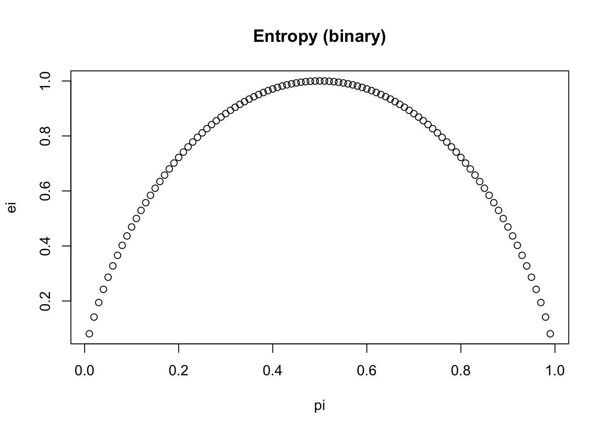

\[H(X) = -\sum p_i log_2 pi\]\(p_i\) is the proportion of sample in class i
compute_binary_entropy <-function(p){ e =-1*(p*log2(p) + (1-p)*log2(1-p))return(e)}compute_binary_entropy(0.01)
[1] 0.08079314
compute_binary_entropy(0.99)
[1] 0.08079314
compute_binary_entropy(0.5) # evenly distributed, bad split
[1] 1
Visualize
pi <-seq(0.01, 0.99, by =0.01)ei <-sapply(pi, compute_binary_entropy)plot(pi, ei, main ='Entropy (binary)')

In decision tree
high entropy (close to 1) -> classes are evenly distributed, each having probability of 0.5. High uncertainty, bad split
low entropy (close to 0) -> low uncertainty, mostly one class, good split
When building a decision tree, we want to reduce entropy and make the nodes purer, rather than having mixed classes in the nodes.
Information gain (IG) is defined as
\[IG = H(parent) - \sum (\frac{N_{child}}{N_{total}} \times H(child))\] We select the split where IG is maximised.
Y
X1
X2
0
no
yes
0
no
no
0
no
yes
1
yes
yes
With this example, the original entropy is compute_binary_entropy(1/4) =0.811. Now we try the following two splits:
X1
left branch no -> 3 zeros; right branch yes -> 1 yes
entropy for left: 0; entropy for right: 0 (since both are pure)
IG: 0.811 - 0 = 0.811
X2
left branch no -> 1 zero; right branch yes -> 2 zeros, 1 yes
entropy for left: 0; entropy for right: compute_binary_entropy(1/3) = 0.918
compute weighted sum at the split
ws <-1/4*0+3/4*compute_binary_entropy(1/3)ws
[1] 0.6887219
Information gain for this case is 0.811 - 0.689 = 0.122
Now compare the IG at X1 and X2, it’s clear that X1 is producing a purer node, and hence is a better split.
Cross entropy in classification models
Cross entropy measures the differences between true labels and predicted probabilities. For \(p_i\), \(q_i\) being the true class label (0,1) and predicted probability,
\[H(p, q) = -\sum p_i \text{ log } q_i\]
When it is a multi-class problem, \(p_i\) is 1 for the correct class and 0 otherwise.
For a data in class 1, the probability is predicted (to be class 1) are 0.9 and 0.2 respectively by two models. By computing the cross entropy we can see that the one with high probability of being in class 1 (correct) produces lower entropy (0.105) rather than higher (1.60).
compute_cross_entropy <-function(p, q){ e =-1*(p*log(q) + (1-p)*log(1-q))return(e)}compute_cross_entropy(p=1, q =0.9)
[1] 0.1053605
compute_cross_entropy(p=1, q =0.2)
[1] 1.609438
pi <-seq(0.01, 0.99, by =0.01)cei <-c()for (i in1:length(pi)){cei[i] <-compute_cross_entropy(p=1, q=pi[i])}plot(pi, cei, main ='Cross entropy loss')abline(v =0.5, col ='red')